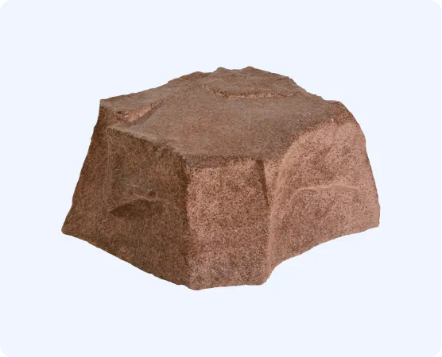

Камни-валуны для декора
Камень-матрешка M-04, 680х620х320мм
Цена и наличие
- 1 шт.275 BYN / шт.В наличии
Данные на 23.11.2026.
Характеристики
- Габариты
- 680х620х320 мм
- Покрываемый диаметр
- 510 мм
- Вес
- 11 кг
- Цвета
- серый, красный
Описание
Камни-валуны для сада — это не только эффектный декоративный элемент, но и практичное решение для маскировки недостатков на участке.
Камни-валуны для сада — это не только эффектный декоративный элемент, но и практичное решение для оформления ландшафта. Они придают участку естественный, гармоничный вид, легко вписываясь в любую стилистику — от дикой природы до ухоженного японского сада. Особенно ценны валуны тем, что отлично перекрывают проблемные зоны: ими можно скрыть неровности рельефа, замаскировать оборудование для пруда, закрыть люки, трубы или другие технические элементы, нарушающие эстетичность участка. Такие камни становятся акцентом, который отвлекает внимание от недостатков и при этом создаёт ощущение, будто он всегда был частью этого места. В сочетании с растениями, водой или древесиной валуны формируют цельные, живописные композиции, внося в сад атмосферу спокойствия и уюта.